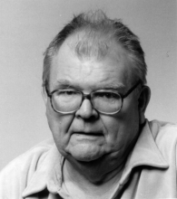

Please note: the AAS Obituaries are temporarily being hosted on this website while their full content is being ingested into the PubPub publishing platform newly adopted by the Bulletin of the American Astronomical Society. When the migration is complete, your existing links will take you to the final, migrated content. Contact peter.williams@aas.org with any questions.
Olin Jeuck Eggen (1919-1998)
Olin Jeuck Eggen, who had observed the stars from at least four continents, died on 2 October 1998 of a heart attack suffered just after arrival in Canberra, Australia for his annual, month-long visit to the place he had come to regard as home.
Eggen was born on the 9th of July 1919 on a farm in Rock County, Wisconsin, the eldest of three children of a Norwegian father and a German-English mother. He received a BA from the University of Wisconsin in 1940 and was attached in a civilian capacity to the US Air Force (1942-1946) and US Navy (1948-1949) and spent part of the war as a courier for the US Office of Strategic Services. He returned to the University of Wisconsin, earning a PhD in 1948 for work with Joel Stebbins (using a photometer constructed by Albert Whitford) on the light curves of Algol, which he described as consisting of four stars, and 44 iota Bootis. He also as a student measured close double stars with a filar micrometer, and both sets of techniques, in photometry and astrometry, eventually contributed to his recognition of moving groups of stars in the galactic disk and halo.
He spent the years 1948-1956 at Lick Observatory, rising from research assistant astronomer to junior astronomer and associate astronomer. Richard Woolley, then director at Mt. Stromlo, had spent time at Lick, and Eggen returned the visit with several extended observing trips to Canberra, where he used the 9" Oddie and 50" Great Melbourne telescopes, adding to the data bases he was accumulating at Lick for color-magnitude diagrams of nearby clusters and field stars. He preferred at that time a color system called (P,V) E . The community eventually concluded that it was less satisfactory than U, B, V colors, and this led to his departure from Lick and to his later preference for Stromgren colors. A 1952 marriage, to the widow of a war time buddy, ended at about the same time, though he included her children from the first marriage in his listing in American Men and Women of Science for many years.
Thus Eggen gladly accepted a position at Royal Greenwich Observatory (RGO), when it was offered by Woolley, who had, meantime, become director there. He served as chief assistant astronomer there from 1956 to 1961 (returning briefly as chief scientist in 1964). He was elected to both the Royal Astronomical Society Dining Club and a vice-presidency of the Royal Astronomical Society 1961-1962), but a public disagreement with Woolley about administrative matters at RGO led to his return to the United States, a professorship at the California Institute of Technology, and staff membership at the Mt. Wilson Observatory from 1961 to 1966.
Eggen's most cited paper, the collaboration with Lynden-Bell and Sandage "Evidence from the Motions of Old Stars that the Galaxy Collapsed," 1962, ( ApJ 136, 748) dates from his Caltech days. Curiously, his later work on moving groups among halo stars is part of the evidence for a competing model.
Other very important work from this period was the collaboration with Jesse Greenstein, identifying the first large, homogeneous sample of white dwarfs from their photometric colors, which really opened up research on stars below the main sequence.
Eggen's departure from Caltech was a perfectly friendly one (though he had contributed relatively little to the teaching mission of the department). Bart Bok had resigned as director of Mt. Stromlo Observatory, and Eggen succeeded him for the period 1966-1977, simultaneously holding a professorship at the Australian National University. During his years in Australia, Eggen revitalized the joint UK-Australia program to build a large telescope in New South Wales, facilitated the construction of other new instruments, hired wisely, and protected his young colleagues from extraneous duties. Somehow, in his fifteen-hour working days, he also produced 98 research papers during his Stromlo years. Strong differences of opinion concerning the management of the Anglo-Australian Telescope (AAT) project eventually led to his resignation from the AAT Board and his departure from Australia.
Eggen's final professional position was as a staff astronomer at Cerro Tololo Inter-American Observatory, where, once again, he sometimes assumed temporary administrative responsibilities when director Victor Blanco was away. And his working style continued to be as many nights at the telescope as possible, as recorded in his memoir in Annual Reviews of Astronomy and Astrophysics (31, 1-11, 1993).
Among his memberships and honors were the American Astronomical Society Russell Lectureship in 1985 (and roughly 50 years of AAS membership), the Pawsey Memorial Lecture of the Australian Institute of Physics, and the presidency (1971-1972) of the Astronomical Society of Australia. He was elected to the International Astronomical Union in Rome in 1952, but eventually resigned.
An earlier obituary, by K. C. Freeman has appeared in Astronomy and Geophysics (41, 1.36, 2000), portions of which appear here, and a more extensive one will appear on Publications of the Astronomical Society of the Pacific.
This version contains a correction of an error in the original.
Photo courtesy of Cerro Tololo Inter-American Observatory
Obituary written by: Ken C. Freeman (Mt. Stromlo Observatory), Albert Whitford (Madison, Wisconsin), Jesse Greenstein (Duarte, California), et al.
BAAS Citation: BAAS, 2000, 32, 1661
SAO/NASA ADS Bibcode: 2000BAAS...32.1661F